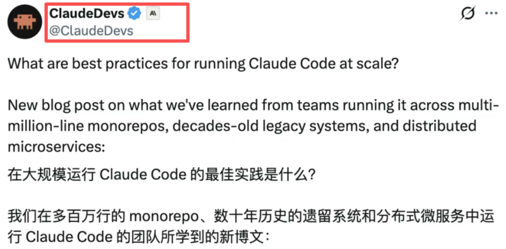
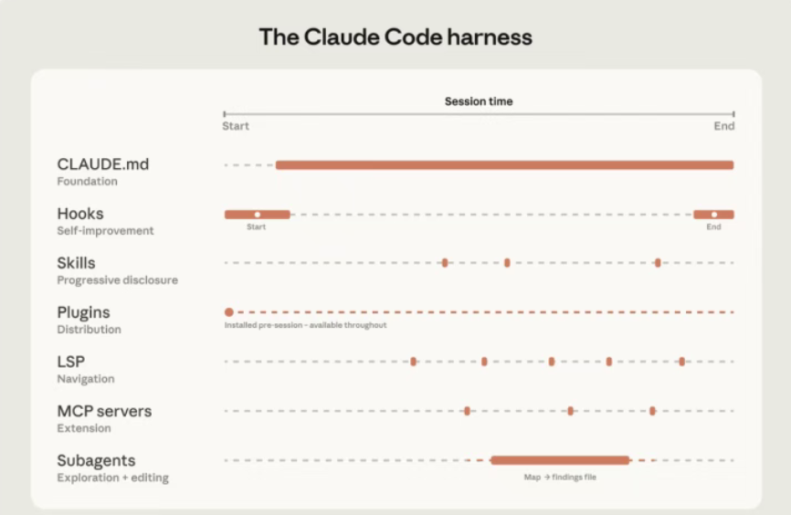
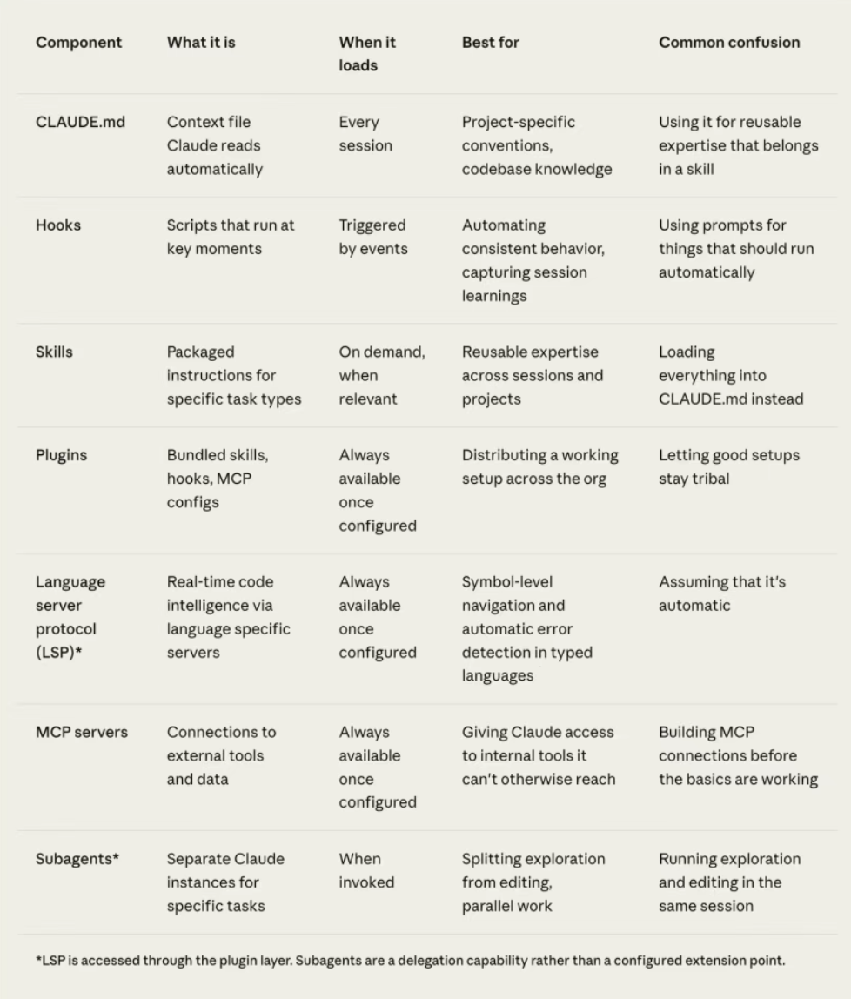
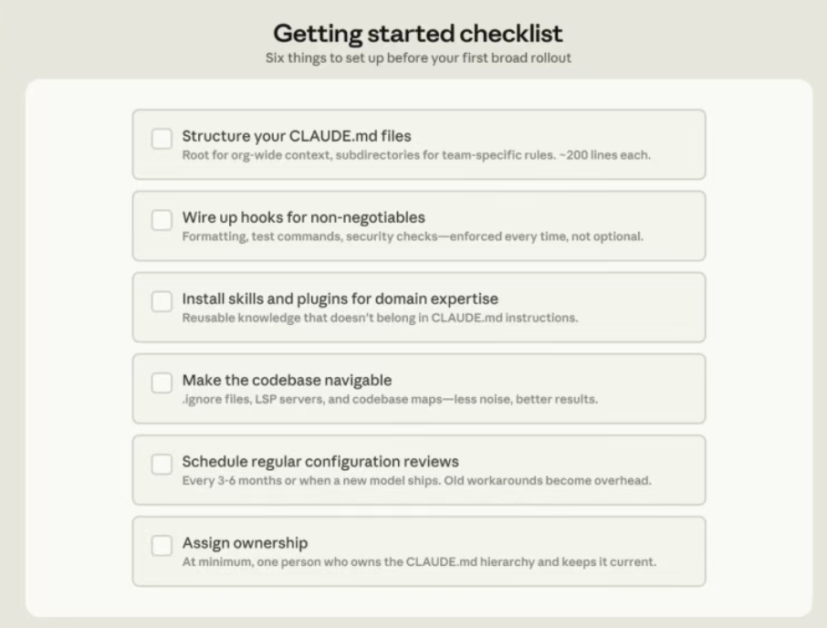
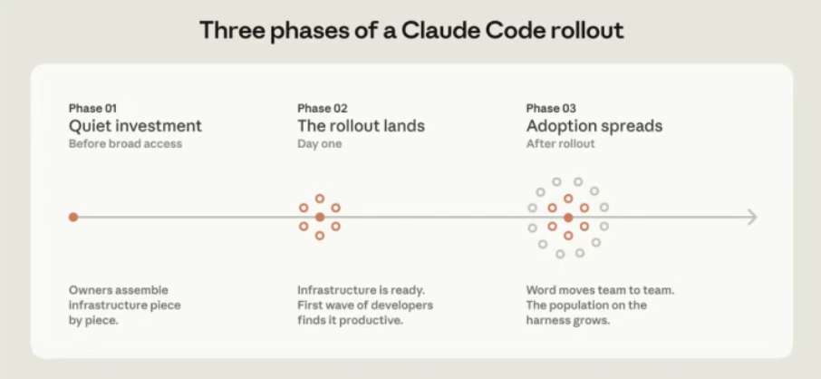
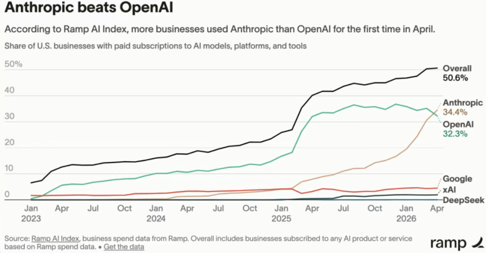

朋友们，今天聊一篇你可能不会主动点开，但读完会恍然大悟的技术博客。
就在几个小时前，Anthropic官方发布了一篇标题毫不起眼的文章——「How Claude Code works in large codebases」，翻译过来就是“Claude Code怎么在大型代码库里干活”。听起来像是一份普通的技术文档，但读完之后我的判断是：这篇文章的价值，可能比发布一个新模型还要大。

先说核心结论，一句话就足够扎心：决定Claude Code表现上限的，不是模型本身，而是你围绕模型搭的那套“脚手架”。
Anthropic把这套脚手架叫做「Harness」。

这篇博客来自Anthropic的AI应用团队，他们专门帮企业客户把Claude Code部署到百万行级别的单体仓库、几十年历史的遗留系统、以及分布在十几个微服务里的复杂架构中。在这些环境里反复踩坑之后，他们终于愿意把压箱底的经验公开了。Claude Code不做索引，它像人一样翻文件
首先，一个可能颠覆你认知的事实：Claude Code不做代码索引。
市面上不少AI编程工具的做法，是先用RAG技术把整个代码库做一遍向量嵌入，查询的时候从向量数据库里检索最相关的代码片段。思路很先进，但现实很骨感——当你所在的团队有几千个工程师每天在提交代码，嵌入管道根本追不上更新速度。你检索出来的那个函数，可能两周前就被重命名了。
Claude Code选了一条更笨、但也更稳妥的路：直接在文件系统里搜索。它和人类工程师一样，遍历目录、读文件、用grep工具查找关键词、沿着引用关系一层层跳转。好处是每个开发者看到的永远是最新的代码，不存在“索引过期”这回事。代价也很明显：它需要足够多的起始信息，才知道该往哪个方向去找。
而这个“起始信息”从哪来？就是那套脚手架要解决的问题。
Harness七层架构：从毛坯房到精装房

Anthropic把Claude Code的整套扩展体系拆成了七层。这七层环环相扣，叠加起来的效果远大于“每个功能单独用一用”。第一层：CLAUDE.md——给Claude一张地图
每次会话启动时，Claude Code会自动加载CLAUDE.md文件。根目录放全局规范，子目录放局部约定。Claude在代码库里移动时，会一路往上找，把沿途碰到的所有CLAUDE.md文件叠加起来读一遍。这个过程相当于递给它一张不断叠加细节的地图。
但这张地图必须精简。塞太多内容反而会拖累模型的表现。社区的最佳实践是单个文件控制在60到120行，200行是硬上限。超过之后，后面的规则会被默认降低权重——你辛辛苦苦写的注意事项，它可能根本没看进去。
第二层：Hooks——不是建议，是法律
Hooks是脚本级别的硬性控制。和CLAUDE.md里“建议性”的指引不同，Hook是百分百强制执行的，Claude绕不过去。格式化、lint检查、类型校验，这些事不应该靠AI自己去“记住”，应该靠Hook来“强制执行”。
Anthropic还提了一个反直觉的用法。大多数团队把Hook当成安全护栏——防止Claude犯错。但更高阶的玩法是Stop Hook：每次会话结束时，让Claude自动回顾刚才干了什么、犯了什么错、有什么可以沉淀的经验，然后自动更新CLAUDE.md。会话结束，经验沉淀。下次新会话启动时，Claude Code就会比上一次更懂你和你的项目。
第三层：Skills——按需加载的专家知识
Skills解决的是“信息过载”的问题。你不用每次会话都把所有知识全灌进去。比如安全审查的Skill只在审核代码时才加载，文档更新的Skill只在改了代码之后才激活。Skills还能绑定特定路径——支付团队的部署Skill只在支付服务的目录下生效，别人改其他模块时不受影响。知识被精确投放到了需要它的场景里。
第四层：Plugins——一键打包，全团队共享
插件把Skills、Hooks、MCP配置打包成一个安装包，通过公司内部的插件市场分发。新员工入职第一天安装插件，就能拥有和老员工完全一样的AI编程起点。不需要手把手教，不需要发一堆配置文档，装一个插件，全部到位。
第五层：LSP——从“字符串匹配”进化到“符号级精度”
LSP全称是语言服务器协议，它让Claude用符号级别的精度来导航代码，而不是靠字符串匹配瞎猜。在大型代码库里，你用grep搜一个常见的函数名可能返回几千条结果，Claude得打开大量文件才能判断哪一条是自己真正需要的。有了LSP，它直接返回同一符号的所有引用位置，Claude还没开始读文件，过滤就已经完成了。
第六层：MCP服务器——连接你公司的一切
MCP让Claude能连接你公司内部的工具、数据源和API。最成熟的团队已经把内部的结构化搜索封装成了MCP工具，Claude可以直接调用。还有团队把内部文档系统、工单系统、数据分析平台全部接进来了。Claude不再是一个孤立的编程助手，而是嵌入了整个公司的信息流。
第七层：子代理——探索和修改，必须分开
子代理是独立的Claude实例，拥有自己独立的上下文窗口。Anthropic发现一个关键规律：探索代码和修改代码，这两件事应该分开进行。有团队的做法是先派一个只读子代理去扫描某个子系统，把结果写进文件，然后主代理带着完整的认知再去更新代码。上下文不混淆，注意力不分散，效果立竿见影。

三条实操建议，每一条都打在痛点上
除了七层架构，Anthropic还给了三条非常具体的实操建议，每一条都是从企业客户的真实翻车现场里总结出来的。
第一条：在子目录启动Claude Code，别在仓库根目录。
这条建议在单体仓库里尤其反直觉，因为你的构建工具链通常默认你在根目录操作。但Claude从子目录启动时，会自动往上找CLAUDE.md，根目录的上下文并不会丢失。好处是上下文从一开始就聚焦在相关的代码上，不会被百万行无关代码稀释掉注意力。
第二条：测试和lint命令要按子目录分别配置。
你只改了一个微服务，却跑了全仓库的测试——直接超时，上下文里灌满了跟你的改动毫无关系的输出。子目录级别的CLAUDE.md里应该写清楚：这个目录用什么命令跑测试、怎么构建。精确到目录，不要图省事写全局。
第三条：CLAUDE.md需要定期清理，过期规则比没有规则更可怕。
模型一直在更新。你给上一代模型写的规则，可能在下一代模型上已经不适用了。比如早期你告诉Claude“每次重构只改一个文件”，当时确实需要这个约束来保持稳定。但新模型已经能处理跨文件的协调编辑了，这条规则反而限制了它的能力。Anthropic的建议是每三到六个月重新审查一次配置，每次模型大版本更新后也要再检查一遍。
评论区有个高赞回复说得特别好：“审核CLAUDE.md是这篇文章里最被低估的建议。根本原因不是缺少规则，是过期规则没人清理。这一条的投入产出比，比LSP和子代理加起来都高。”另一个网友补刀更狠：“CLAUDE.md的架构设计比模型选择重要10倍。配置搞错了，5个并行代理会信心满满地构建出5套完全不同的系统。瓶颈是共享状态，不是规模。”
怎么在公司里推广Claude Code？先搭地基，再发钥匙

Anthropic花了大量篇幅聊推广策略，核心经验就一条：在大范围发放使用权限之前，先让一个小团队把基础建设搭好。
有一家公司，两个工程师提前搭建了一套Plugins和MCP配置，团队所有人第一天拿到权限就能上手干活。另一家公司更为激进，直接成立了一个专职的AI编程工具管理团队，在推广之前就把基础设施全搭完了。
Anthropic还提到了一个新角色——「Agent Manager」，半个产品经理加半个工程师，专门负责Claude Code的配置、权限和插件市场。如果公司规模还撑不起一个专职团队，最低配也得有一个DRI（直接责任人）。这个人的职责就是管理CLAUDE.md的层级、设置和权限策略，确保这些配置跟得上模型本身的迭代速度。没人管，再好的规则也会慢慢腐烂。
为什么这篇文章发在这个时间点？
这篇文章发布的时间节点，有点意思。

企业费用管理平台Ramp的最新数据显示，Anthropic的商业客户占比已经达到34.4%，首次超过了OpenAI的32.3%。其中最大的增长引擎就是Claude Code。据SemiAnalysis的报告，Claude Code贡献了全球GitHub公开代码提交的4%，而一个月前这个数字还是2%，直接翻了一倍。
Claude Code的年化收入已经达到25亿美元。从0到10亿美元花了6个月，从10亿到25亿只花了3个月。增速不但没有放缓，反而在加速。
当用户量涨到这个规模，模型的边际提升已经不是最大的杠杆点了。让几百万开发者用对、用好、用出效果，才是决定下一阶段胜负的关键。这篇博客，就是Anthropic递出来的“正确使用说明书”。
文章末尾还标注了这是「Claude Code at scale」系列的第一篇，后面还会有针对非Git版本控制、超大规模文件夹等特殊场景的专题内容。
写在最后
如果你的Claude Code最近表现不尽如人意，先别急着怪模型。很可能不是你选的模型不够强，而是你还没给它搭好那套脚手架。
Harness这个框架本身并不复杂，七层结构每一层都很直观。难的是真的花一个下午坐下来，审视一下你的CLAUDE.md里有多少条规则已经过期了，hooks是否还跑得通，Skills是不是该更新了。
花一个下午搭好脚手架，它能帮你省下无数个调试的下午。